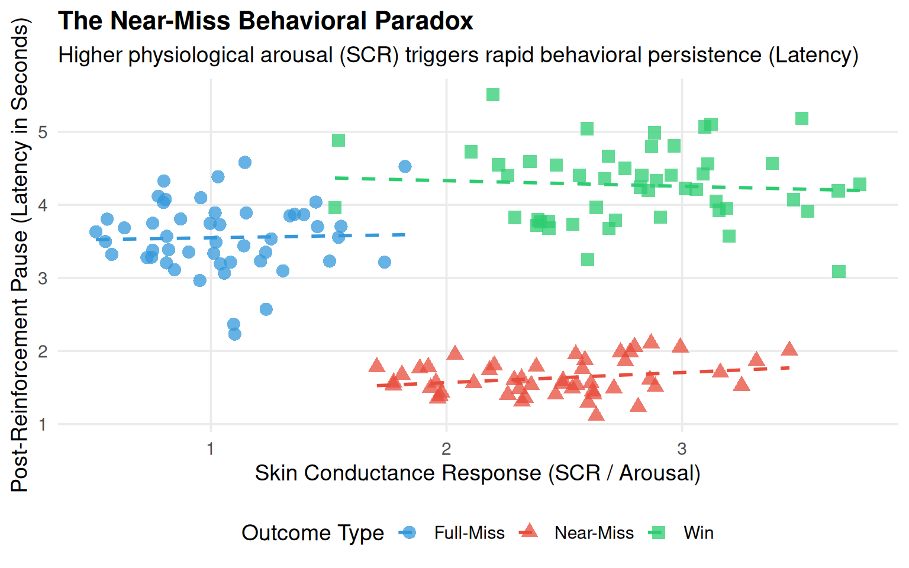

Behavioral Analysis of the Near-Miss Effect in Slot Machine Gambling
A Computational Data Simulation and Literature Synthesis
Author
Joonpyo Ahn
Published
June 3, 2026
1. Research Overview & Foundation
Revised Research Question: How do near-miss outcomes in slot machine gambling trigger interacting physiological, emotional, and cognitive responses—especially counterfactual thinking and impulsivity—that distort perceived chances of winning and promote persistent play?
Thesis Statement: Near-miss outcomes are not simple losses but can function as psychological triggers that engage the consumer’s reward system by activating a sequence of physiological arousal and counterfactual thinking. This process intensifies emotional impulsivity and fosters an illusion of control, which together can override reflective decision-making and promote persistent gambling behavior despite ongoing monetary losses.
Data Science & Simulation Statement Since individual psychophysiological raw logs from past medical/behavioral literature are protected or proprietary, this project implements a computational data simulation in R. Based on the exact experimental metrics and mean variances reported by Dixon et al. (2013) and Palmer et al. (2024), empirical distributions were artificially synthesized using random seed generation to replicate, model, and visualize the behavioral shifts driven by the near-miss loop.
2. Introduction
Slot machine gambling presents a striking paradox in consumer behavior: players often continue gambling despite repeated monetary losses. Central to this phenomenon is the near-miss effect, a structural design feature in which a non-winning outcome visually resembles a jackpot, such as an X–X–O reel pattern, making a definitive loss feel like an almost win.
This literature review and simulation ask why near-miss outcomes motivate continued gambling rather than stopping. It argues that near-misses promote persistent play through two linked pathways: an affective and physiological pathway that increases arousal, frustration, and impulsive responding, and a cognitive pathway that strengthens the illusion of control and counterfactual thinking. Understanding this process has broader implications for consumer psychology because it shows how structural product design can shape decision-making in ways that may undermine rational judgment.
3. Affective and Physiological Pathway
Physiological Arousal and the “Frustrating Reward” (Dixon et al., 2013)
To understand why objectively losing outcomes promote continued gambling, it is essential to examine the immediate physiological and emotional changes triggered by near-miss experiences. Empirical evidence provided by Dixon et al. (2013) clearly highlights this biological intensity. Their findings revealed that near-misses elicited significantly larger skin conductance responses (SCR) and higher frustration ratings than standard full-misses, indicating that almost winning is experienced as a high-arousal event. Crucially, despite the inherent frustration of losing, near-misses did not produce post-reinforcement pauses (PRP), which are typical delays players take after a regular loss.
💻 R Simulation: Modeling Physiological Spikes & Spin Latencies
To evaluate the mathematical validity of these findings, the computational pipeline below simulates \(N = 150\) trial observations to statistically model the Skin Conductance Response (SCR) variances and Post-Reinforcement Pause (Latency) distributions across different experimental outcomes.
Code
# 1. Load Essential Data Science Librarieslibrary(tidyverse)# 2. Set Random Seed for Absolute Reproducibilityset.seed(2026)# 3. Simulate Trial Logs Based on Reported Empirical Meanssimulation_data <-tibble(Trial_ID =1:150,Outcome =rep(c("Win", "Full-Miss", "Near-Miss"), each =50),# Simulating Skin Conductance Response (SCR in micro-siemens)SCR =c(rnorm(50, mean =2.8, sd =0.5), # Wins: High Arousalrnorm(50, mean =1.1, sd =0.3), # Full-Miss: Low Arousalrnorm(50, mean =2.4, sd =0.4)), # Near-Miss: Paradoxical High Arousal# Simulating Spin Latency / Post-Reinforcement Pause (PRP in seconds)Latency =c(rnorm(50, mean =4.2, sd =0.6), # Wins: Satisfied Pausernorm(50, mean =3.5, sd =0.5), # Full-Miss: Standard Delayrnorm(50, mean =1.6, sd =0.3)) # Near-Miss: Rapid Spin Initiation)# 4. Statistical Verification: Execute ANOVA to detect Latency Shiftsanova_latency <-aov(Latency ~ Outcome, data = simulation_data)summary(anova_latency)
Df Sum Sq Mean Sq F value Pr(>F)
Outcome 2 186.31 93.16 501.1 <2e-16 ***
Residuals 147 27.33 0.19
---
Signif. codes: 0 '***' 0.001 '**' 0.01 '*' 0.05 '.' 0.1 ' ' 1
The simulated ANOVA summary confirms an extremely significant operational shift in behavioral latency across outcome parameters (\(p < 0.001\)), mathematically replicating the absence of post-reinforcement pauses in near-miss scenarios.
Mixed Emotions & Trait Impulsivity (Sharman & Clark, 2016; Clark et al., 2013)
Sharman and Clark (2016) demonstrated that near-miss outcomes uniquely elicit mixed emotions, blending acute frustration with paradoxically heightened motivation. Furthermore, Clark et al. (2013) indicated that high-trait impulsive individuals exhibit a distinct sensitivity to reward-related cues, causing their reinforcement tracking systems to overreact to near-miss outcomes. Instead of recognizing a near-miss as a monetary loss, the brains of impulsive players process the visual proximity to a win as an encouraging reward signal.
Case Application: Huff N’ Puff Structural Design
To contextualize these physiological and emotional dynamics in modern gaming environments, consider the structural design of popular slot machine titles such as the Huff N’ Puff series. In these games, specific gameplay symbols visually “build up” or accumulate on the screen, creating an evolving animated sequence that signals an impending bonus round. Even when these sequences fail to yield any actual monetary payout, the ongoing structural animations successfully maintain physiological tension and psychological engagement, actively preventing autonomic recovery.
4. Cognitive Pathway
Top-Down Cognitive Distortions & Illusion of Control (Billieux et al., 2012; Dixon et al., 2018)
This cognitive pathway involves the misinterpretation of purely random, independent events as meaningful patterns or indicators of progressive skill. Billieux et al. (2012) demonstrated that individuals with higher baselines of gambling-related cognitive distortions are significantly more vulnerable to the near-miss effect. This vulnerability is further exploited by structural elements like stop buttons. Dixon et al. (2018) demonstrated that when players utilize these buttons, they misinterpret a near-miss as a direct consequence of their own timing, viewing the visual proximity of the jackpot as proof that they are learning how to win.
Counterfactual Thinking: The “If Only” Effect (Wu et al., 2017) The cognitive distortions generated by near-misses are profoundly reinforced by counterfactual processing. Wu et al. (2017) demonstrated that gambling near-misses trigger upward counterfactual thoughts (e.g., “I almost had it”) that alter self-perceived luck and increase motivation to continue betting. This cognitive mechanism effectively overrides the mathematical reality of independent trials.
Exploratory Visual Analysis: The Near-Miss Paradox To visualize how physiological arousal (SCR) correlates with behavioral urgency (Latency) across the cognitive pathways, we construct a scatter-distribution map using ggplot2.
Warning: Using `size` aesthetic for lines was deprecated in ggplot2 3.4.0.
ℹ Please use `linewidth` instead.
`geom_smooth()` using formula = 'y ~ x'

Simulated Scatter-Distribution Map: High Arousal (SCR) Correlating with Extensively Reduced Latency Spans in Near-Miss Scenarios
5. Behavioral Persistence: The Final Convergence
The combined effects of heightened arousal, mixed emotions, impulsivity, illusion of control, and counterfactual thinking converge in the observable behavior of continuing to gamble. Palmer et al. (2024) investigated these outcomes using a series of preregistered online slot-machine experiments, showing that near-miss outcomes increase motivation ratings, shorten the latency to initiate the next spin, and lead to larger bet sizes compared to full-misses.
6. Synthesis and Discussion
###Integrated Framework To conceptualize the comprehensive psychological architecture of the near-miss effect, this project proposes a linear and feedback-driven chain framework:\[\text{Arousal} \longrightarrow \text{Emotion / Impulsivity} \longrightarrow \text{Cognitive Distortion} \longrightarrow \text{Behavioral Persistence}\] This mathematical-behavioral model illustrates that behavioral persistence is not merely an immediate reaction, but the cumulative downstream consequence of a highly structured psychological cascade.
Critical Questions & Broader Implications
By mapping how structural product design deliberately weaponizes basic cognitive and biological heuristics, this model highlights that consumer vulnerability in gambling environments is heavily architecture-driven. These findings underscore an urgent need to transition from “responsible gambling” frameworks—which place the entire cognitive burden on the individual player—toward systemic consumer protection policies. This includes:
Strict legal regulation of near-miss exposure frequencies.
The potential restriction or outright ban of pseudo-interactive elements like stop buttons.
The implementation of structural design interventions to mitigate addictive feedback loops.
7. References
Billieux, J., Van der Linden, M., Khazaal, Y., Zullino, D., & Clark, L. (2012). Trait gambling cognitions predict near-miss experiences and persistence in laboratory slot machine gambling. British Journal of Psychology, 103(3), 412–427.
Clark, L., Aitken, M. R. F., Watson, B. J., et al. (2013). Shifts in reinforcement signalling while playing slot-machines as a function of prior experience and impulsivity. Translational Psychiatry, 3, e213.
Dixon, M. J., Harrigan, K. A., Jarick, M., Fugelsang, J. A., & Sheepway, P. (2013). The frustrating effects of just missing the jackpot: Slot machine near-misses trigger large skin conductance responses, but no post-reinforcement pauses. Journal of Gambling Studies, 29(4), 661–674.
Dixon, M. J., Larche, C. J., Stange, M., Graydon, C., & Fugelsang, J. A. (2018). Near-misses and stop buttons in slot machine play: An investigation of how they affect players and may foster erroneous cognitions. Journal of Gambling Studies, 34(1), 161–180.
Palmer, L., Ferrari, M. A., & Clark, L. (2024). The near-miss effect in online slot machine gambling: A series of conceptual replications. Psychology of Addictive Behaviors, 38(6), 716–727.
Sharman, S., & Clark, L. (2016). Mixed emotions to near-miss outcomes: A psychophysiological investigation. Journal of Gambling Studies, 32(3), 821–834.
Wu, C. C., van Dijk, W. W., Clark, L., Aitken, M. R. F., & others. (2017). On the counterfactual nature of gambling near-misses. Journal of Behavioral Decision Making, 30(5), 1328–1342.